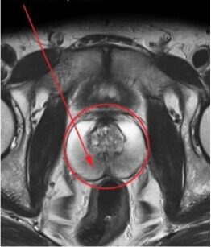
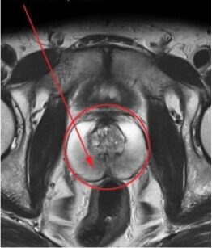

Aleksander Raźny , pisze
Lekarz - urolog
Staż pracy: 8 lat
Zarestrowany: 03 grudnia 2013


Koledzy ratujcie! Po raz pierwszy od 8 lat praktyki do czynienia z takim problemem. Pacjent - mężczyzna, 43 lata, cierpi na przewlekłe zapalenie gruczołu krokowego już od 6 lat. Testowaliśmy już wszystko, co tylko można - antybiotyki, homeopatię, terapię i masaże. Pomaga na miesiąc, nie więcej, objawy powracają. Jak osiągnąć długotrwałą remisję? Czego używacie do leczenia takich, trudnych pacjentów? Podzielcie się swoimi zawodowymi tajemnicami i wiedzą.
 

Powiedz, czy twój pacjent przestrzega odpowiedniej diety? Może dlatego leczenie okazuje się nieskuteczne? Konieczna jest całkowita rezygnacja z tłustych, ostrych i smażonych potraw.
Oczywiście, o diecie rozmawialiśmy na samym początku. Pacjent prawidłowo przestrzega wszystkich zaleceń. Tylko z jakiegoś powodu to nie pomaga, poprawy brak, człowiek naprawdę cierpi, mówiąc szczerze tam już cała rodzina jest bliska rozwodu...
W takich przypadkach zazwyczaj pomaga masaż profesjonalny i dobrze skonstruowana terapia z użyciem najbardziej nowoczesnych antybiotyków. Całkiem możliwe, że twój pacjent cierpi na przechłodzenie narządów miednicy (tak, nawet w lecie wystarczy usiąść w cieniu drzewa na gołej ziemi i gotowe!), i przez to choroba powraca ponownie do niego.
Koledzy, leczycie zapalenie gruczołu krokowego jakimiś średniowiecznymi metodami. Jakie antybiotyki, po co truć pacjentów? Zostaw te preparaty dla rekonwalescencji po operacjach i dla skomplikowanych przypadków. Niedawno byłem na międzynarodowej konferencji andrologów, gdzie bardzo aktywnie omawiano problematykę zapalenia gruczołu krokowego i metod jego leczenia. Mieliśmy, między innymi, referat Stevena Wineberga, twórcy unikalnego preparatu z całkowicie naturalnym składem. Przedstawił dane z badań klinicznych, które potwierdziły wysoką skuteczność preparatu w porównaniu z innymi opcjami leczenia.
Panie Mikołaju, jesteś pan geniuszem - tak wszystko ładnie opisane, nawet z fotografiami, a żeby podać dokładną nazwę preparatu i informacje, gdzie go kupić - to już się pan nie pofatygował napisać.
Przepraszam, koledzy, istotnie zapomniałem. Lek nazywa się . Na konferencji twórcy ujawnili nam sekret, że z powodu dużej konkurencji i marży ten środek nie będzie dystrybuowany przez sieci apteczne. będą mogli zamówić i kupić tylko specjaliści, dlatego każdy uczestnik konferencji otrzymał własny link do strony producenta . Przy zamówieniu przez ten link środek jest dostarczany do dowolnego regionu w zaledwie tydzień. Kilku moich pacjentów już zamówiło i chce wypróbować go na sobie.
A co wchodzi w skład leku?
Mieczysławie, preparat jest w pełni naturalny i nie powoduje żadnych skutków ubocznych. W jego skład wchodzą takie składniki, jak ekstrakt z owoców indyjskiej opuncji, łodygi szparagów, korzeń imbiru, aloes i cytrynian cynku. Więcej można przeczytać na stronie producenta .
W takich przypadkach zazwyczaj pomaga masaż profesjonalny i dobrze skonstruowana terapia z użyciem najbardziej nowoczesnych antybiotyków. Całkiem możliwe, że twój pacjent cierpi na przechłodzenie narządów miednicy (tak, nawet w lecie wystarczy usiąść w cieniu drzewa na gołej ziemi i gotowe!), i przez to choroba powraca ponownie do niego.
jest uważane za najbardziej zaawansowaną metodę leczenia i profilaktyki zapalenia gruczołu krokowego. Zestaw środka jest przeznaczony na miesiąc. Powtarzać należy go co pół roku - to pozwoli na osiągnięcie poprawy stanu pacjenta, aby zapobiec zaostrzeniu się choroby i okresom ostrych stanów zapalnych.
Dziękuję, poczytałem o , zbadałem bliżej statystyki i opinie. Wszystko w porządku, skuteczność na dobrym poziomie, będę nim leczyć swojego pacjenta!
Aleksandrze, link publikowałem wyżej, ale jeszcze raz skopiuję - strona producenta . Tylko uważaj, aby nie zamawiać go nigdzie indziej, niż na stronie producenta. W ostatnim czasie pojawiło się bardzo dużo podróbek, o tej samej nazwie. pacjenci mi to przynoszą i narzekają, że to ja im wcisnąłem dziadostwo. A nawet opakowanie jest inne.
O, teraz widzę, dziękuję, panie Mikołaju. Pomogłem pacjentowi zamówić , napiszę potem o wynikach leczenia w praktyce.
No cóż, koledzy, spieszę podzielić się sukcesem. Za pomocą mój pacjent z przewlekłym zapalenie gruczołu krokowego pozbył się choroby. Minęły już 2 miesiące od zakończenia leczenia, nic go nie niepokoi, czuje się świetnie, wszystkie badania w normie. Za 3 miesiące będziemy powtarzać terapię dla utrwalenia efektu.
Teraz swoim pacjentom polecam jako skuteczną naturalną alternatywę dla tradycyjnych metod.
Aleksander, cieszę się, że mogłem pomóc w wyleczeniu trudnego pacjenta. Sam teraz aktywnie używam w leczeniu podobnych przypadków, pacjenci są zadowoleni, preparat jest skuteczny w 100%.